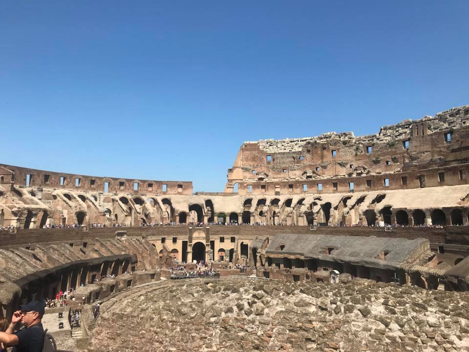
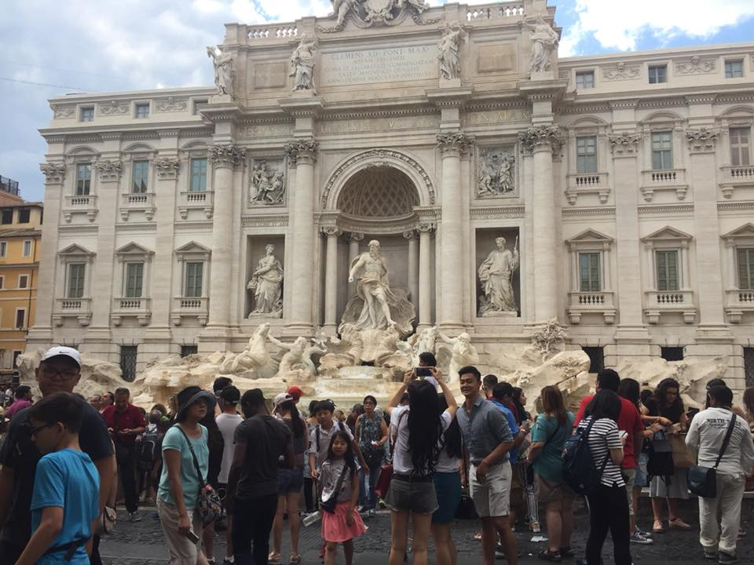
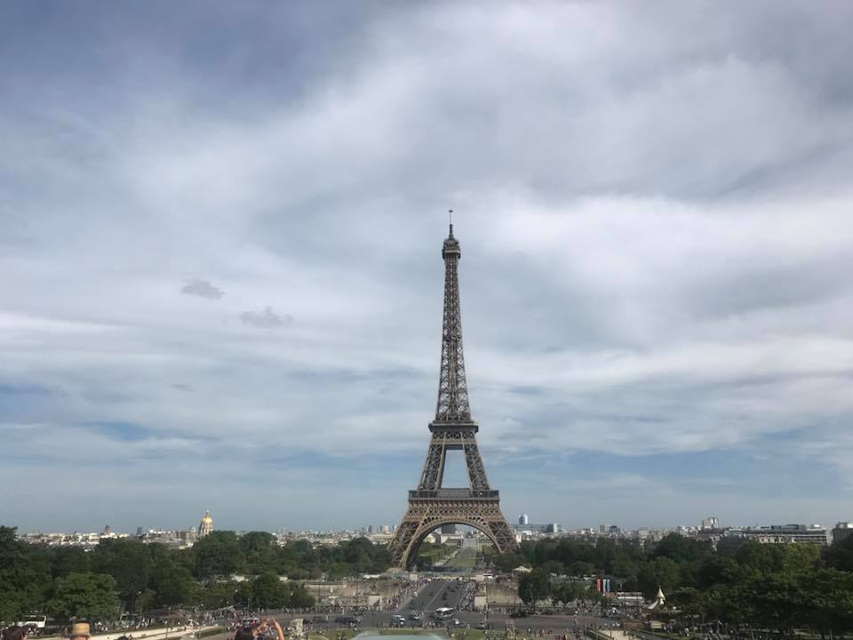
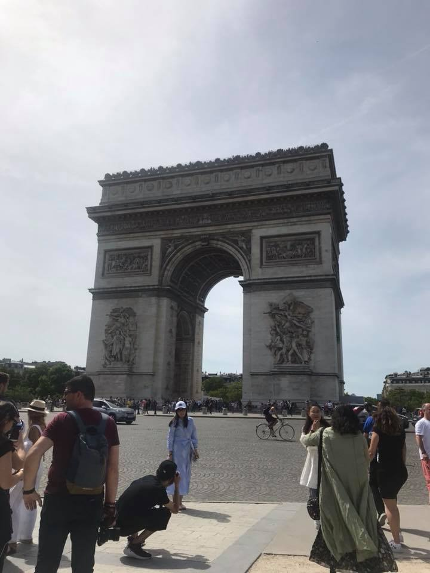
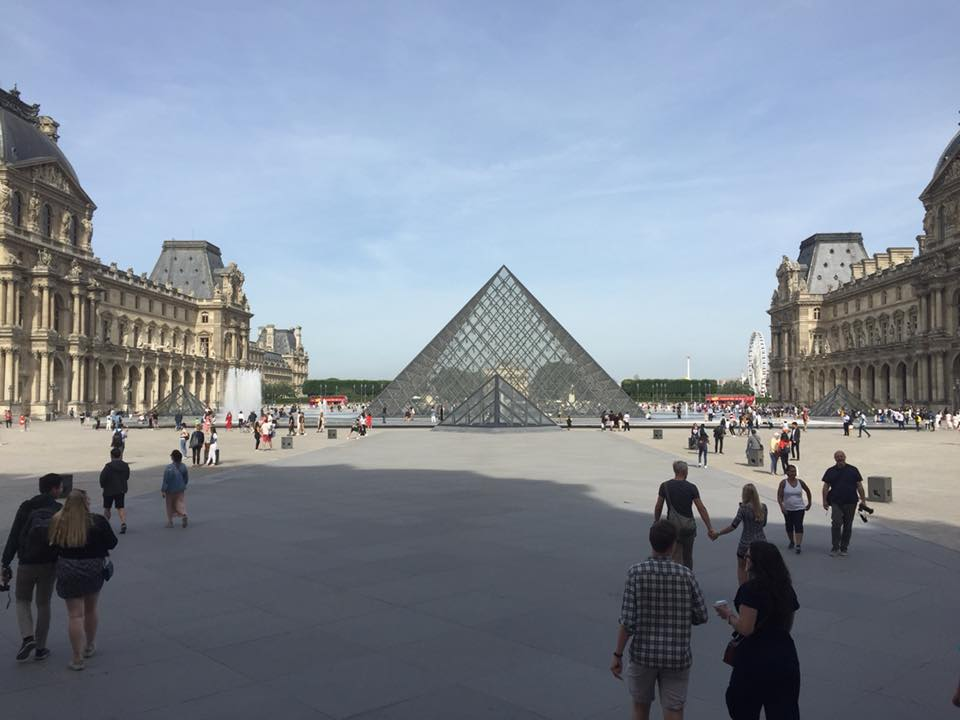
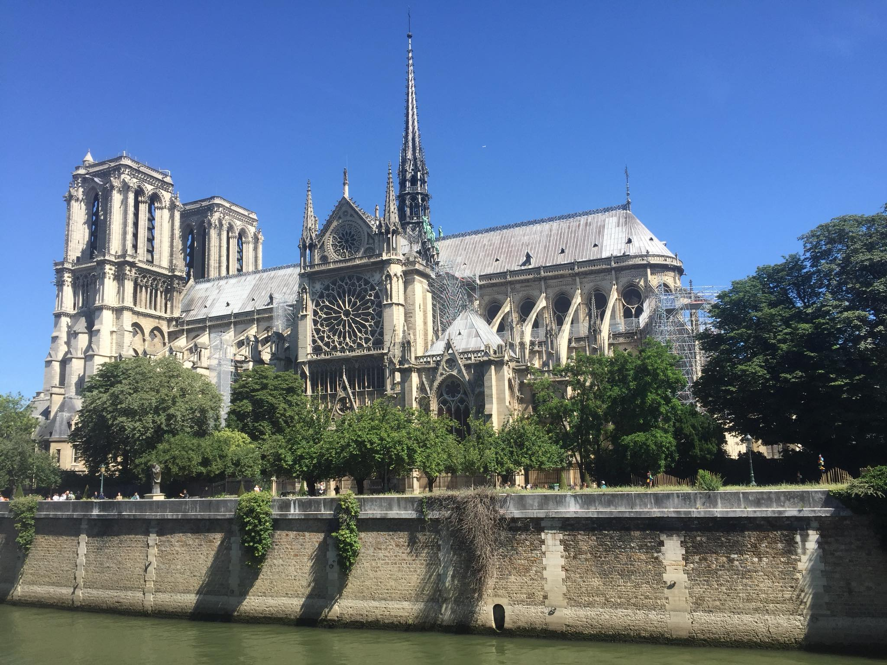
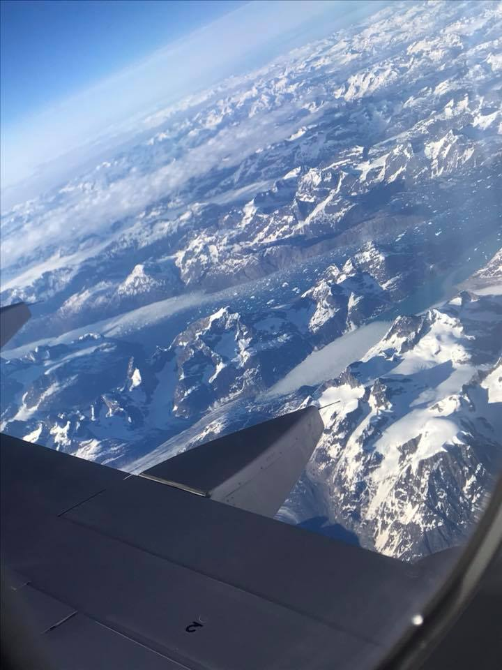
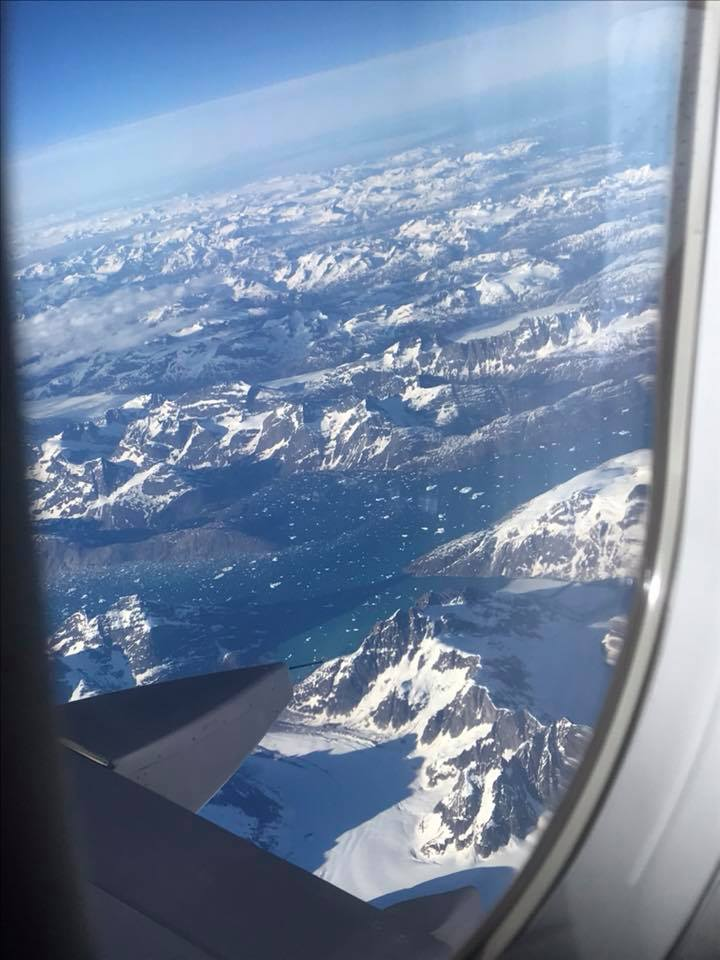
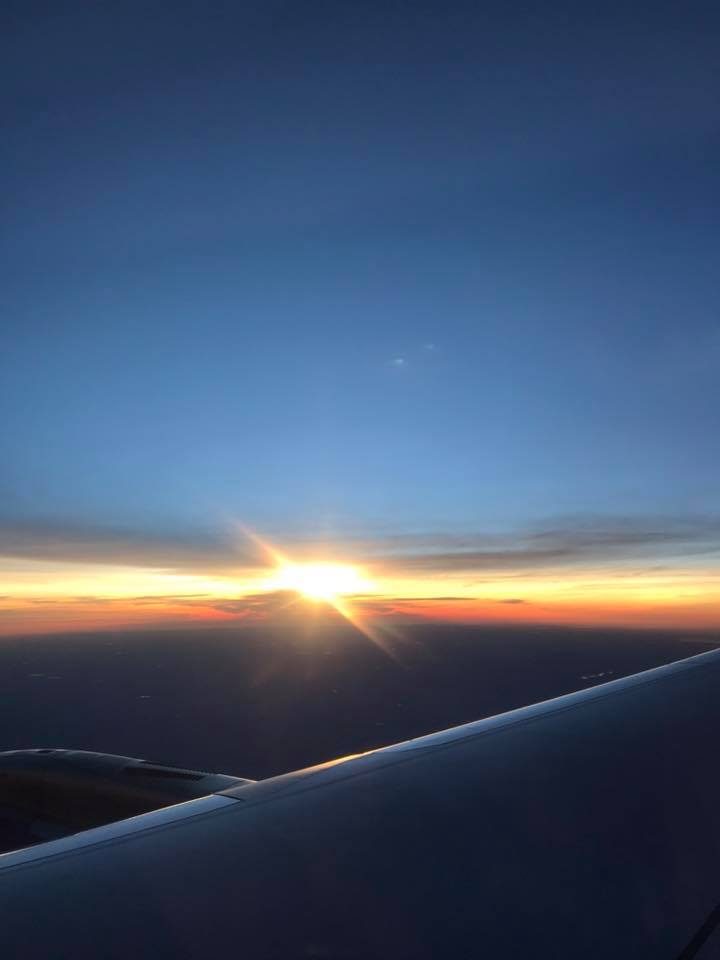

A European Adventure
A couple of years ago I set off on a trip of a lifetime with two of my best friends. We had been planning for months the places we would stay, how we would get around and the daily adventures we would embark on. We were finally getting to see part of Europe and were beyond ecstatic!
When the day finally came to embark on our trip, we drove up to Chicago to fly out to London for an hour layover. From there we boarded another plane to make our way to Rome. Not knowing the challenges we would face, getting from the airport to the train station and then walking to our Air BNB at 9 o'clock at night. We were exhausted and ready for bed but we had a long treck to make from the train station to our place for the week. Once we made it we were greeted by the man that owned the Air BNB, greatfully he spoke english. Once settled in for the night even though we were exhausted we were excited to see Rome and all the history that is there.
Our vist in Rome included eating lots of good food including Gelato, good coffee and lots of pastries wishing we could bring them back with us. We visited the Colluseum, Roman Forum, Trevi Fountain, and The Pantheon. We experienced so much of the Roman cuture in just a short amount of time and there was still things we didn't get to see. We then traveled from Rome off to Paris in just a couple of short hours.
 Landing in Paris there was more of a language barrier to conqure with getting an uber from the air port to our Air BNB. It took a couple of drivers before we could find one that we could semi understand. Once we finally did we made our way to our little apartment within a few hours of the Eiffel Tower above some quaint little restaurants. While we were there it happened to be a music festival the first night and the town sure did come alive that night it was amazing to just see the culture and getting to experience it with my friends. It was a little chilly in Paris and the sun didn't set till about 10 o'clock at night, which made it interesting trying to fall asleep. While in Paris we visited The Vatican, Versailles, The Lourve, Notre Dame Cathedrale, Arc De Triomphe and The Eiffel Tower. Traveling between locations by bus and walking sometimes being mistaken for french which was funny since we can't speak french. So much beauty and art to take in, it was all so breath taking and such an amazing experience. Our time in Paris was only about a week and then due to needing a job I had to come back home and my friends went on to London.    
Traveling back home by myself across country was a little nerve racking but I survived flying across country alone. I had a layover for about four hours in Iceland, touring through the tiny airport searching for Pokemon, watching Netflix and reading. Getting to see tiny specks of Iceland makes me want to go and visit to see the beauty that it has to offer.
  